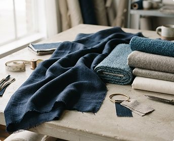
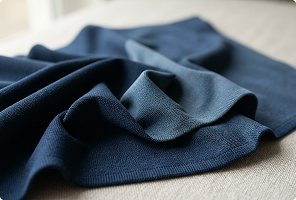

Fabric Sourcing and Consultation
Fabric sourcing and consultation for apparel businesses.
For businesses that buy fabric for apparel. PN & Co. International helps you find the right fabric and reach a clear sourcing enquiry. The service is about fabric: finding it, choosing it and enquiring about it.
Fabric sourcing / Fabric consultation
Fabric sourcing for businesses

Finding the right fabric starts with knowing what you are making. We help translate a garment application, a composition preference and a target quantity into a focused sourcing enquiry, including sample requirements, supplier coordination, quantities and lead times.
- Fabric selection and specification discussions
- Sample requirements and supplier coordination
- Commercial enquiries, quantities and lead times
Start with the garment, fabric type and expected quantity.
Explore Fabric Library →Fabric consultation

If you are not sure which fabric to choose, we help you narrow the options. We talk through composition, weight, stretch and intended garment, and suggest what to sample before you commit to production.
- Composition, weight and stretch for your garment
- What to sample before production
- Comparing options before you commit
Tell us what you are making and what matters most.
Ask for advice →How an enquiry works
From a first brief to a clear quote, in four steps.
- 01
Share your brief
Garment, fabric type, preferred composition and expected quantity.
- 02
Narrow the options
We help compare composition, weight and stretch for your garment.
- 03
Review samples
Assess suitable fabrics before you commit to production.
- 04
Confirm the details
Specifications, minimums, lead times and pricing are confirmed with you.
Who the service is for
Businesses that buy fabric to make or sell apparel.
Fashion brands
Find fabrics for a new collection and decide between options before sampling.
Garment manufacturers
Source a fabric a client’s brief calls for that you do not already stock.
Wholesalers and retailers
Source fabric for private-label lines.
Institutional buyers
Match a fabric to how a uniform or workwear garment will be worn and washed.
Tell us the garment, the fabric and the quantity.
Share your application, fabric preferences and quantity. We’ll help narrow the options.